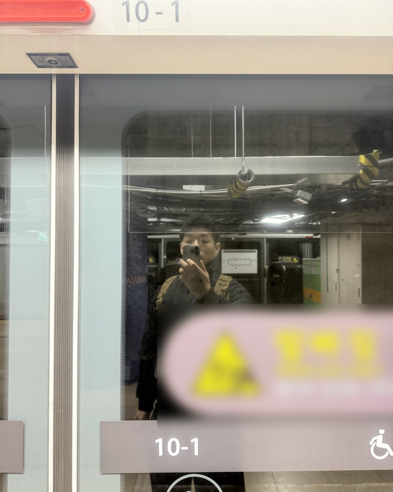
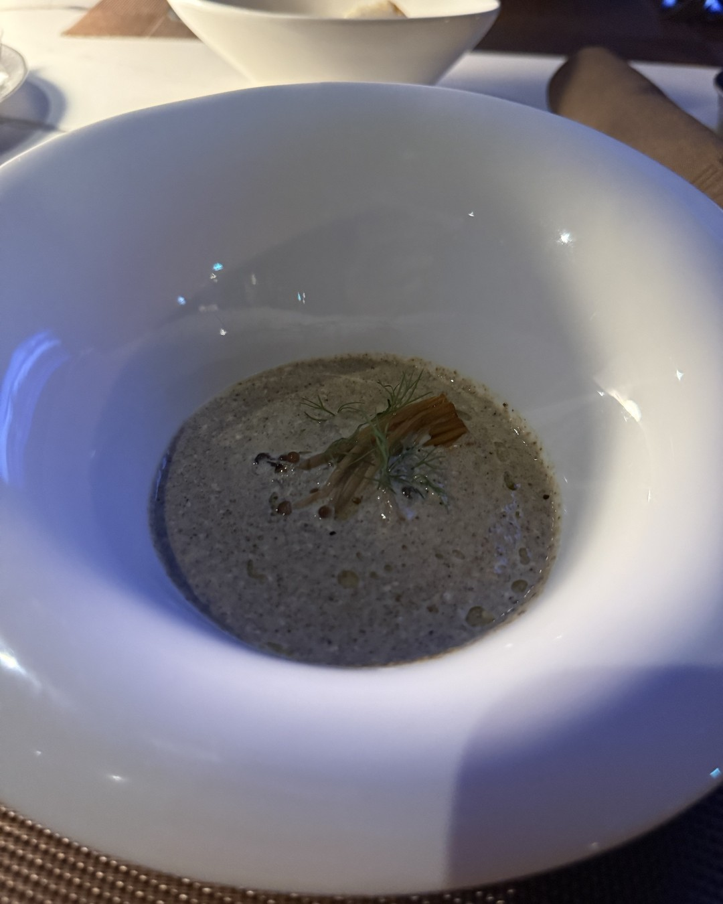
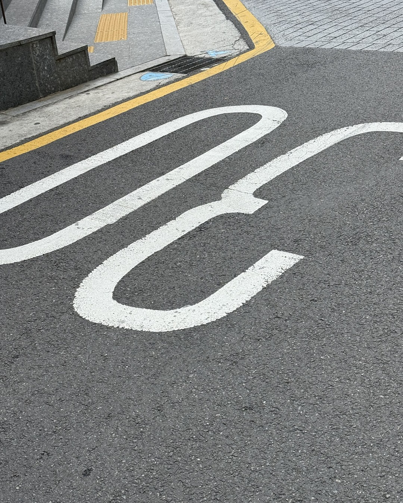
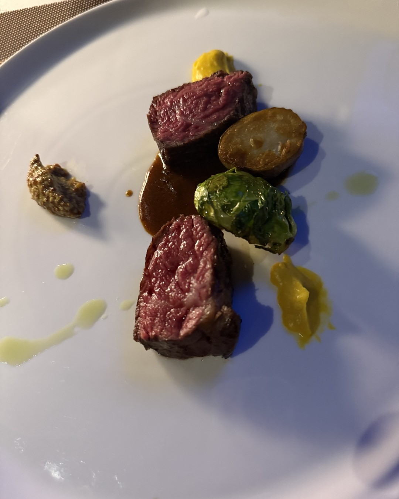
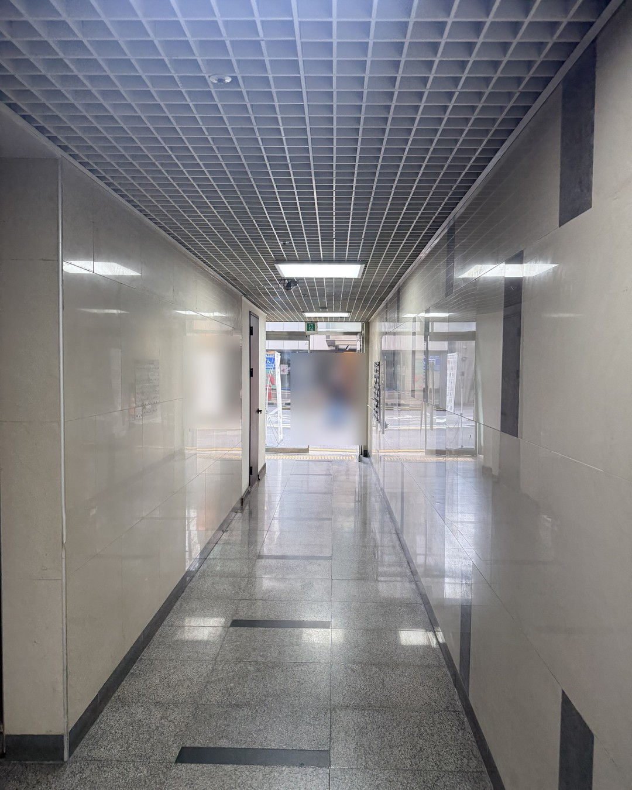
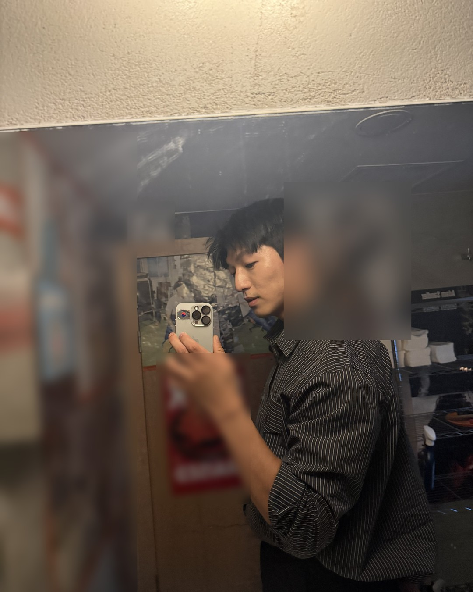

남자가 식을 때,
칭찬보다 먼저 줄어드는 것
(예쁘다는 말은 아직 하는데.)
1/14
@mszexc
넘겨보세요 →

예쁘다는 말은 아직 해요.
그래서 식은 줄 몰라요.
2/14
@mszexc
남자들끼리 하는 말 #43
근데 그보다 먼저
줄어든 게 하나 있어요.
3/14
@mszexc
남자들끼리 하는 말 #43

질문이에요.
당신에 대해 묻는 말.
4/14
@mszexc
남자들끼리 하는 말 #43

"오늘 뭐 했어?"
이 말 대신 이런 말이 늘어요.
"아 그래? 좋네."
5/14
@mszexc
남자들끼리 하는 말 #43

궁금하지 않으면
대답만 하고 묻지 않아요.
6/14
@mszexc
남자들끼리 하는 말 #43
남자들끼리는 이렇게 말해요.
"요즘 걔 얘기 들으면 좀 피곤해."
(관심이 줄면, 듣는 것부터 일이 돼요.)
7/14
@mszexc
남자들끼리 하는 말 #43
반대로 마음이 있을 땐
사소한 것까지 물어요.
"그 친구는 그래서 어떻게 됐어?"
8/14
@mszexc
남자들끼리 하는 말 #43
칭찬은 습관으로도 할 수 있어요.
질문은 궁금해야 나와요.
9/14
@mszexc
남자들끼리 하는 말 #43
그래서 칭찬보다
질문이 먼저 줄어요.
10/14
@mszexc
남자들끼리 하는 말 #43
확인하는 법은 하나.
그가 마지막으로 당신 하루를 물은 게 언제인지.
11/14
@mszexc
남자들끼리 하는 말 #43
근데 질문이 줄었다고
바로 식었다고 단정하진 마세요.
(바쁠 때도 줄어요.)
12/14
@mszexc
남자들끼리 하는 말 #43

2주 넘게 이어진다면,
먼저 물어보세요.
"요즘 무슨 생각 해?"
13/14
@mszexc
남자들끼리 하는 말 #43
이것만 기억하세요.
궁금한 사람에겐, 묻게 돼요.
남자가 하는 말의 뜻은 전자책 1·2권에 · 프로필 링크에서 무료로 받아보세요
14/14
@mszexc
남자들끼리 하는 말 #43